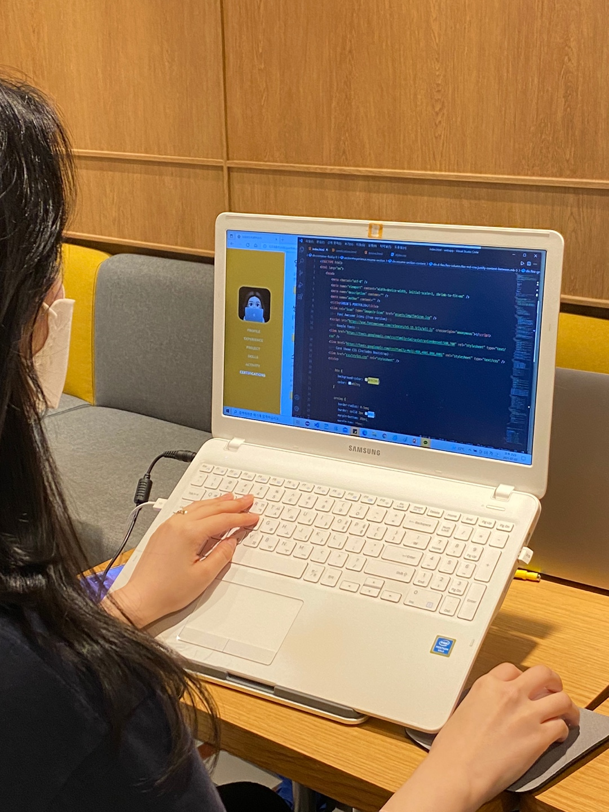
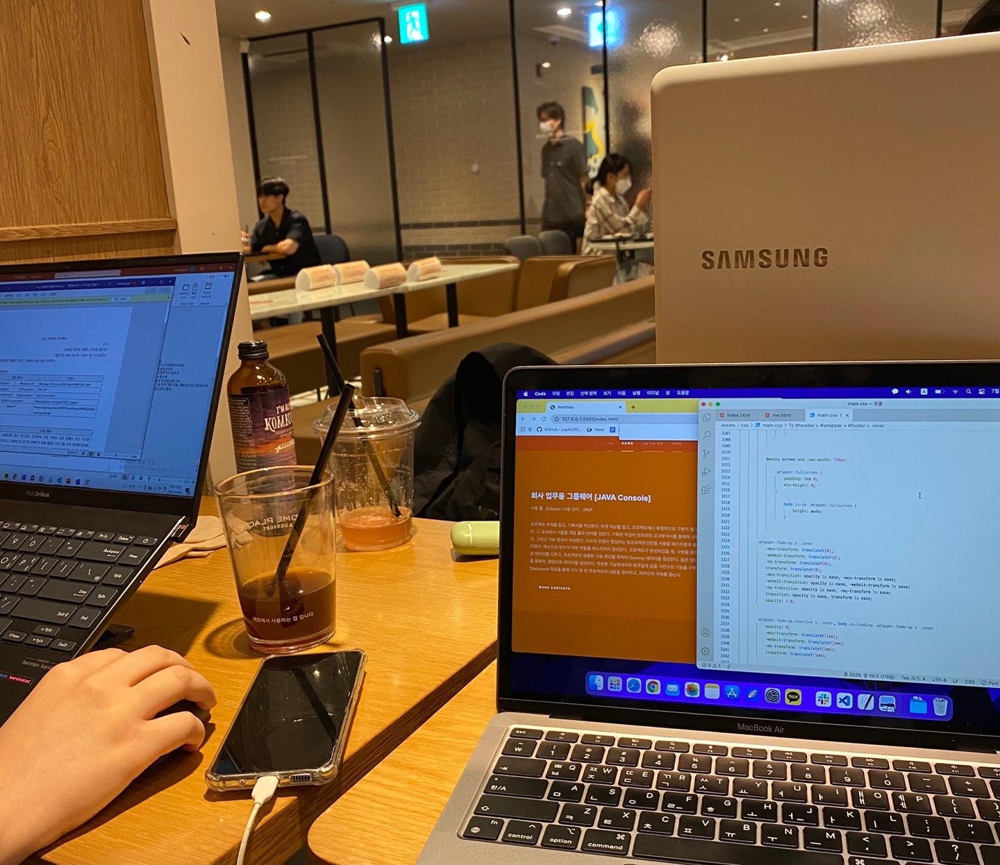

[ 스터디 활동 ]


저는 쌍용교육센터를 다니면서 같은 조원들과 매주 토요일마다 스터디 모임을 가졌습니다. 한 주 동안 배웠던 것을 복습하거나, 미리 다음 수업을 예습하기도 하였습니다. 혼자 공부를 하다보면 종종 공부에 소홀해지거나, 방황하는 경우가 생겼었는데 스터디 모임을 통해 능률이 더 향상되는 느낌을 받았습니다. 이렇게 서로 모르는 부분이나 잘 풀리지 않는 부분을 공유함으로써 재미있게 함께 공부하는 방법을 터득했습니다.